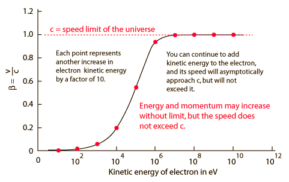

c as Speed Limit
The speed of light c is said to be the speed limit of the universe because nothing can be accelerated to the speed of light with respect to you. A common way of describing this situation is to say that as an object approaches the speed of light, its mass increases and more force must be exerted to produce a given acceleration. There are difficulties with the "changing mass" perspective, and it is generally preferrable to say that the relativistic momentum and relativistic energy approach infinity at the speed of light. Since the net applied force is equal to the rate of change of momentum and the work done is equal to the change in energy, it would take an infinite time and an infinite amount of work to accelerate an object to the speed of light. (Sorry, Captain Kirk. We can't give you warp speed!)

A common resistance to the speed limit is to suggest that you just accelerate two different objects to more than half of the speed of light and point them toward each other, giving a relative speed greater than c. But that doesn't work! Time and space are interwoven in such a way that no one observer ever sees another object moving toward them at greater than c. The Einstein velocity addition deals with the transformation of velocities, always yielding a relative velocity less than c. It doesn't agree with your common sense, but it appears to be the way the universe works.
|
Index
Relativity concepts |